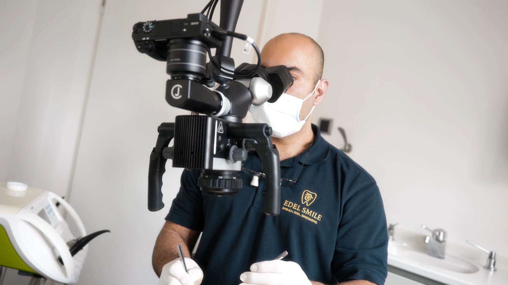

Zahnerhaltung beginnt mit genauem Hinsehen
Mikroskopische Wurzelbehandlung und substanzschonende Zahnerhaltung in München Trudering.

Jeder eigene Zahn ist wertvoll
Der Erhalt Ihrer natürlichen Zähne steht bei uns an erster Stelle. Mit dem Dentalmikroskop können wir stark vergrößert und sehr präzise arbeiten – besonders bei anspruchsvollen Wurzelkanalbehandlungen, feinen Defekten oder komplexen Situationen.
Dadurch erkennen wir Strukturen, die mit bloßem Auge kaum sichtbar sind, und können gezielter und substanzschonender behandeln.
Unser Prinzip: Nicht mehr behandeln als notwendig – aber so präzise wie möglich.
Weil Details entscheiden
Im Zahninneren und an Restaurationsgrenzen geht es häufig um Strukturen von Bruchteilen eines Millimeters. Ein Dentalmikroskop vergrößert das Behandlungsfeld und verbessert gleichzeitig die Ausleuchtung. Besonders bei Wurzelkanalbehandlungen, komplexer Zahnerhaltung und präzisen restaurativen Eingriffen kann dies einen entscheidenden Unterschied im Behandlungsablauf machen.
Mehr sehen. Präziser arbeiten. Zahnsubstanz gezielt erhalten.
Wurzelbehandlung & Endodontie in München
Mikroskopische Wurzelbehandlung
Präzise Endodontie mit Vergrößerung, für den Erhalt des natürlichen Zahnes bei entzündeten oder infizierten Wurzelkanälen.
Substanzschonende Rekonstruktion
So viel gesunde Zahnsubstanz wie möglich erhalten — Behandlung nur so weit wie medizinisch nötig.
Sorgfältige Diagnostik
Digitale Diagnostik und genaues Hinsehen vor jeder Therapieentscheidung — verständlich erklärt.
Das könnte Sie auch interessieren
Bereit für den nächsten Schritt?
Vereinbaren Sie Ihren Termin bei EDEL SMILE in München Trudering.
Termin vereinbaren